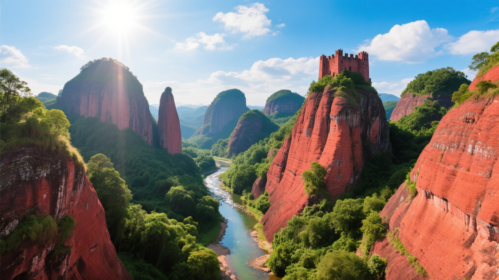
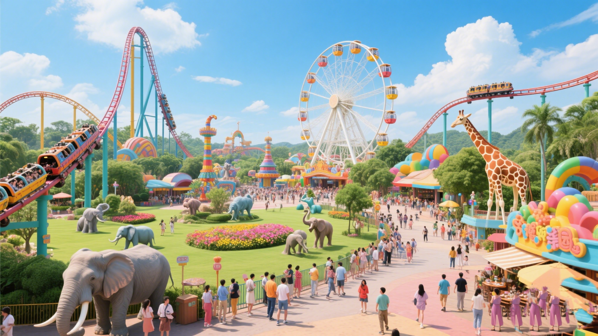
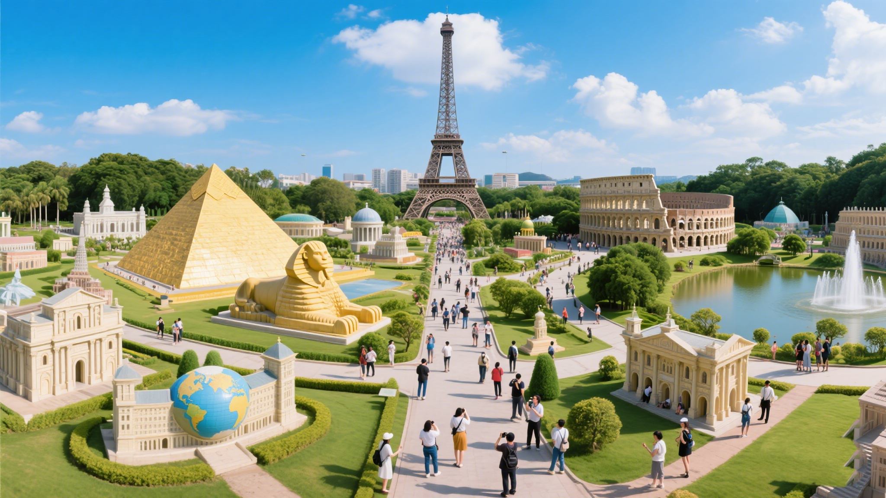

旅游景点
广东拥有众多美丽的旅游景点，无论是自然风光还是人文景观都独具特色。以下为你介绍一些值得一去的地方。

丹霞山
丹霞山是世界地质公园、世界自然遗产，以其独特的丹霞地貌而闻名。这里的山峰形态各异，色彩斑斓，仿佛一幅天然的画卷。游客可以登山观景、欣赏日出日落，感受大自然的神奇魅力。

长隆旅游度假区
长隆旅游度假区是一个集主题公园、野生动物世界、水上乐园等多种娱乐项目于一体的大型旅游度假区。这里有刺激的游乐设施、精彩的动物表演和丰富的美食，适合全家一起游玩。

世界之窗
世界之窗是一个以世界文化为主题的大型文化旅游景区，这里汇聚了世界各地的著名景点和建筑微缩景观。游客可以在一天内领略到世界各国的风情和文化，是了解世界的一个好窗口。